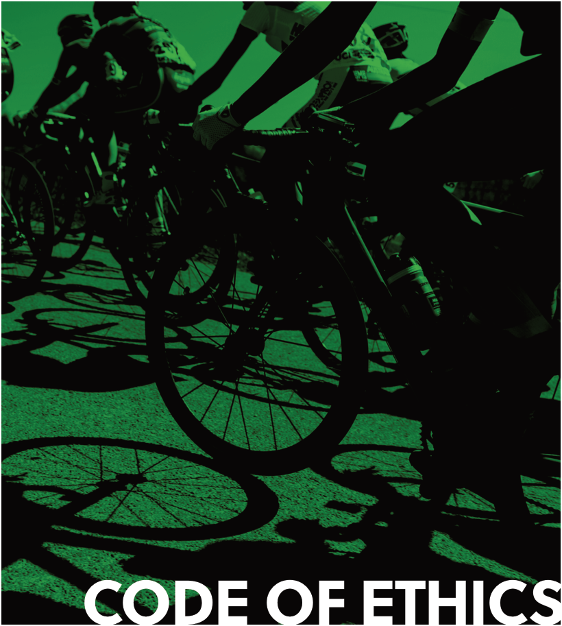

Amendment — tracked changes. This document shows UCI’s amendments as tracked changes:
struck-throughtext is being removed and the adjacent plain text is its replacement. Some character-level edits (numbers, word fragments) from the source PDF may display imperfectly — for the clean, in-force wording see the consolidated regulation in the sidebar or the official PDF.

----- Start of picture text -----
CODE OF ETHICS
----- End of picture text -----
VERSION ON 04.08.2023
| PREAMBLE | 3 | |
|---|---|---|
| CHAPTER I | SCOPE OF APPLICATION | 4 |
| CHAPTER II | RULES OF CONDUCT | 6 |
| CHAPTER III | THE ETHICS COMMISSION | 11 |
| CHAPTER IV | RULES OF PROCEDURE | 15 |
| CHAPTER V | FINAL PROVISIONS | 23 |
| APPENDIX 1 | PROTECTION OF PHYSICAL | |
| AND MENTAL INTEGRITY – | ||
| SEXUAL HARASSMENT AND ABUSE | 24 | |
| APPENDIX 2 | MANIPULATION OF CYCLING EVENTS | 27 |
2 UCI CODE OF ETHICS | TABLE OF CONTENTS
PREAMBLE
The UCI acknowledges its responsibility to safeguard the integrity and reputation of cycling throughout the world. The following Code reflects and defines the most important core values for behaviour and conduct within UCI and its affiliates. The conduct of persons bound by this Code shall reflect their support of the principles of integrity and ethics and their efforts to refrain from anything that could be harmful to these aims and objectives.
Furthermore, UCI and its continental confederations and national federations, as well as their officials individually, all licence-holders in the world of cycling and all organisers and applicants for the organisation of UCI competitions and events restate their commitment to the UCI Cycling Regulations and undertake to respect and ensure adherence to the below provisions which form an integral part of the UCI Cycling Regulations.
Note: terms referring to natural persons are applicable to both genders. Any term in the singular applies to the plural and vice versa.
UCI CODE OF ETHICS | PREAMBLE
3
CHAPTER I
SCOPE OF APPLICATION
Art. 1 Persons bound by the UCI Code of Ethics
The UCI Code of Ethics (hereinafter: the Code) shall apply to the persons falling within the categories below. With respect to legal persons, the Code shall apply to its members with authority to represent the entity or to the entity itself, without prejudice to article 27.2.
Officials
All UCI Officials, meaning members of the UCI Management Committee, honorary members, members of UCI Commissions (including the Professional Cycling Council) and Judicial bodies, voting delegates at the UCI Congress, national federation delegates at the UCI Congress, the executive members of continental confederations and the candidates for an executive position within the UCI and the continental confederations.
Licence-holders
All licence-holders as described in Article 1.1.010 of the UCI Cycling Regulations.
Entities subject to the UCI Regulations
Entities subject to the UCI Cycling Regulations, such as teams registered with the UCI, organisers of events registered on an international calendar, national federations and continental confederations affiliated with the UCI, are also subject to the Code.
UCI and WCC staff and consultants
UCI and UCI World Cycling Centre (hereinafter: UCI WCC) staff, consultants and any person holding a role representing the UCI or UCI WCC or working on behalf of the UCI or the UCI WCC in connection with the organisation of cycling competitions, the governance of cycling or anti-doping within cycling.
Event organisers
Organisers and applicants for the organisation of the UCI World Championships, UCI World Cups and any other UCI competition or event, regardless of their form or constitution.
National federations are requested to adopt a code of ethics based on the present Code. National federations may decide to apply the present Code for their own organisation, subject to the necessary drafting amendments.
4 UCI CODE OF ETHICS | SCOPE OF APPLICATION
Art. 2 Scope of applicability
The Code shall apply to conduct that damages the integrity and reputation of cycling and in particular to illegal, immoral and unethical behaviour. The Code focuses on general conduct within cycling.
For the avoidance of doubt, the application of the Code shall be subsidiary to the UCI Cycling Regulations with regard to any behaviour which is specifically governed therein, such as with respect to in-race actions. In this regard, the Ethics Commission shall appreciate if a behaviour or action is likely to constitute a violation to the Code or to the UCI Cycling Regulations.
The application of the Code is also subsidiary regarding any behaviour by a member of UCI or UCI WCC staff which is governed by internal regulations applicable pursuant to the relevant contract.
Art. 3 Breach of the Code
As a general rule, any breach of the Code may be established whether it was committed deliberately or negligently, whether or not the breach constitutes an act or an attempted act, and whether the parties acted as participant, accomplice or instigator.
Art. 4 Statute of limitation
The investigation of breaches of the provisions of the Code may no longer be initiated after a period of 10 years. Provided that the investigation is initiated in a timely manner, the Ethics Commission shall be entitled to complete pending cases and render decisions.
UCI CODE OF ETHICS | SCOPE OF APPLICATION
5
CHAPTER II
RULES OF CONDUCT
Art. 5 General principles
Persons bound by the Code are expected to be aware of the importance of their duties and concomitant obligations and responsibilities.
Persons bound by the Code shall show commitment to an ethical attitude. When discharging their duties and responsibilities they shall behave in a dignified manner and act with complete honesty, credibility, impartiality and integrity. They shall fulfil their duties with due care and diligence.
Persons bound by the Code may not abuse their position in any way, especially to take advantage of their position for private aims or gains.
All persons concerned shall at all times act in compliance with the principles below in any activity related to cycling and shall immediately report any potential breach of this Code to the Secretariat of the Ethics Commission (cf. Article 13.1).
Art. 6 General rules of integrity
Art. 6.1. Non-discrimination
The persons bound by the Code shall not undertake any action, use any denigratory words, or any other means, that offend the human dignity of a person or group of persons, on any grounds including but not limited to skin colour, race, religion, ethnic or social origin, political opinion, sexual orientation, disability or any other reason contrary to human dignity.
Art. 6.2 Duty of neutrality
In dealings with government institutions, national and international organisations, associations and groupings, persons bound by the Code shall remain politically neutral, in accordance with the principles and objectives of the UCI, whenever expressing themselves on behalf of the organisation they represent.
Art. 6.3 Confidentiality
Persons bound by the Code shall not disclose information entrusted to them in confidence and which has not been made public. Disclosure of other information shall not be for personal gain or benefit, nor be undertaken maliciously to damage the reputation of any person or organisation.
The obligation to respect confidentiality survives the termination of any relationship which makes a person subject to the Code.
6 UCI CODE OF ETHICS | RULES OF CONDUCT
Art. 6.4 Protection of physical and mental integrity
The persons bound by the Code shall respect the integrity of all persons with whom they interact in the context of their cycling-related activity. The personal rights of every individual whom they contact and who are affected by their actions shall be protected and respected. In particular, sexual harassment in any form is forbidden and the welfare of young people under the age of 18 is paramount so as to give them protection from poor practice, abuse and bullying.
The above shall be considered as the general rule and is supplemented by Appendix 1.
Art. 7 Integrity rules pertaining to conduct of office
Art. 7.1 Offering and accepting gifts
Persons bound by the Code may only offer or accept a gift or other benefits in the context of their tasks and duties, provided such gift or benefit meets all the requirements below:
-
a) It has a symbolic or trivial value, or is exclusively aimed at sharing local customs;
-
b) It does not influence any actions undertaken within the roles of either of the persons or entities concerned;
-
c) It is not offered or accepted in contravention of the duties of the persons bound by the Code;
-
d) It does not create any undue pecuniary or other advantage; and
-
e) It does not create a conflict of interest.
Gifts or other benefits must not be offered or accepted if it can reasonably be considered that, at the time of handing over, the gift or other benefit is likely not to meet the requirements above. Any person bound by the Code may also ask for the Ethics Commission’s opinion before definitively accepting a gift or other benefit.
Gifts in the form of money are forbidden in any case.
Art. 7.2 Bribery and corruption
Persons bound by the Code, shall not, directly or indirectly, offer, promise, solicit, give or accept any form of undue remuneration or commission, nor any concealed benefit or service of any nature. The aforementioned rule shall apply to activities related to the organisation of cycling competitions or the governance of the sport, whether within or outside the UCI, continental confederations or national federations and whether in connection with the person’s official activities or not.
UCI CODE OF ETHICS | RULES OF CONDUCT 7
Art. 7.3 Votes
All persons bound by the Code shall neither give nor accept instructions, inconsistent with their respective roles and responsibilities, to vote or intervene in a given manner within the organs of the UCI, continental confederations or national federations and their affiliates, or any organisation to which the UCI is affiliated.
Art. 7.4 Conflicts of interest
Persons bound by the Code shall avoid any situation that could lead to a conflict of interest by taking appropriate measures such as abstaining from taking part, directly or indirectly, in a decision or an agreement and/or disclosing potential interests that are susceptible of influencing the decision-making of the person concerned. A conflict of interest shall arise when the objectivity of a person bound by the Code, in expressing an opinion, undertaking any action or taking part in a decision, may be influenced or be perceived as being influenced due to private or personal interests. Private or personal interests include gaining any possible advantage for the persons bound by the Code, their family, relatives, friends and acquaintances. Specific provisions for the members of the Management Committee are contained in article 56 par. 3 and 4 of the UCI Constitution.
Art. 8 Integrity of competitions
Art. 8.1 Manipulation of cycling events
Any undertakings that are aimed at or may potentially modify or influence the course or result of a competition, or any part thereof, in any manner contrary to sporting ethics, such as manipulation or corruption, is forbidden. For the avoidance of doubt, the provisions of the Code and its Appendix 2 shall be subsidiary to article 1.1.088 of the UCI Regulations with respect to matters governed by said provision.
The above shall be considered as the general rule and is supplemented by Appendix 2.
Art. 8.2 Anti-Doping
Persons bound by the Code shall refrain from any action promoting, facilitating, associating with, or otherwise supporting behaviour or actions that contravene the provisions and the spirit of the UCI Anti-Doping Rules. For the avoidance of doubt, the application of the Code shall be subsidiary to that of the UCI Anti-Doping Rules in respect of any person bound thereto.
8 UCI CODE OF ETHICS | RULES OF CONDUCT
Art. 9 Good governance pertaining to resources
Art. 9.1 UCI and continental confederation resources
The resources of the UCI and continental confederations may only be used for the benefit of cycling in accordance with their respective statutes. In particular, persons bound by the Code are prohibited from misappropriating the UCI and/or continental confederations’ assets, regardless of whether actions are carried out directly or indirectly through third persons.
Art. 9.2 Support from UCI or continental confederations
Any support from the UCI or continental confederations to any person or entity bound by the Code, whether financial, material, or of any other nature, shall be utilised in strict compliance with the purpose for which it was granted.
The UCI or the continental confederation shall be entitled to request from the recipient the production of any appropriate evidence regarding the use of the resources. Moreover, the recipient shall clearly demonstrate the use and purpose of the resources if requested.
Art. 9.3 Support from UCI or continental confederations
Any financial support from an executive member of the UCI or a continental confederation may only be offered or accepted if the following cumulative conditions are met:
-
a) The contribution was not in any way announced prior to the relevant person taking up his/her role;
-
b) The contribution is granted to and managed by the Centre Mondial du Cyclisme foundation or any other entity that is independent from the UCI and the continental confederations, of which the missions are exclusively related to the development of the sport of cycling, and which is authorised by the Ethics Commission;
-
c) The person concerned is not a member of any body of the organisation to which the management of the funds is entrusted;
-
d) The contribution is used in accordance with the objective criteria laid down by the aforementioned body.
UCI CODE OF ETHICS | RULES OF CONDUCT 9
Art. 10 Rules pertaining to relations with third parties
Art. 10.1 Partners
The persons bound by the Code shall undertake dealings, negotiations and decisions regarding relationships with partners, such as broadcasters, sponsors, suppliers and other supporters of cycling in compliance with the rules laid down in the present Code and without being influenced in any manner or accepting any kind of interference.
Art. 10.2 Candidatures for UCI events
All persons bound by the Code shall in all dealings respect the rules applicable to the bidding and selection processes for organisers of UCI competitions and events.
The applicants wishing to organise UCI events shall respect the provisions of the Code in their entirety as well as all other applicable rules.
Art. 10.2.1 Bidding information
The applicant’s bidding material shall be complete and absolutely truthful. Moreover, the information shall not include comparisons of other bids and shall not insult, denigrate or demean other applicants or organisers of UCI events.
10.2.2 Lobbying
Applicants shall refrain from approaching any person, party, or third authority, with a view to obtaining any financial, political or de facto support inconsistent with the provisions of the Code and regulations relating to the relevant bidding process.
Art. 11 Rules pertaining to elections and candidatures for executive positions
In the context of election processes, the persons bound by the Code shall act with integrity and not make use of any illegitimate means that could potentially influence the outcome of the election. In this regard, any promise of a direct or indirect, pecuniary, material, in-kind or other benefit or assistance, made by a candidate in an election to any person involved in the election process or in favour of the entity for which the election is being held, is considered as illegitimate and contrary to the present article.
Persons bound by the Code shall not provide any financial, material, in kind or other, direct or indirect, assistance to a candidate outside of the scope of the tasks usually exerted outside of the context of the election. Candidates shall not accept any such assistance from persons bound by the Code or from a UCI partner, sponsor, organisers of cycling competitions or any other third party with a direct interest in cycling.
Candidates in an election shall conduct themselves in a manner consistent with universal principles of fairness and good faith. They shall not insult, denigrate or demean any other candidate.
10 UCI CODE OF ETHICS | RULES OF CONDUCT
| SECTION 1 | FUNCTIONING |
Art. 12 Composition
The Ethics Commission shall ensure that it functions in an independent manner.
The Ethics Commission shall be made up of at least five members bearing recognised competence in the domain of sports and/or law and ethics. All members of the Ethics Commission shall be fully independent from the UCI, continental confederations, national federations and any other cycling stakeholders. In addition, the composition of the Ethics Commission shall ensure a minimum representation of 25% of each gender.
The members of the Ethics Commission, including the President, shall be appointed by the UCI Congress, on the proposal of the Management Committee, two years after the election of the UCI President and UCI Management Committee and for a four-year term. In case of vacancy of a member due to resignation, removal or death, the UCI Management Committee may make a provisional appointment to be approved at the following UCI Congress. In case the President of the Ethics Commission may not fulfil his role for any reason whatsoever, the members of the Ethics Commission shall designate the member who shall act as his deputy.
The President of the Ethics Commission shall be limited to serving a maximum of two terms of four years, whether continuously or interruptedly.
Art. 13 Principles of functioning
The Ethics Commission shall ensure that it executes its tasks in an independent manner.
Art. 13.1 Secretariat
The Secretariat of the Ethics Commission (hereinafter: the Secretariat) shall be dealt with by a secretary appointed by the UCI Management Committee after consultation with the Ethics Commission. The secretary shall be independent from the UCI and possess adequate legal qualification.
The contact details of the Secretariat shall be published on the UCI website.
UCI CODE OF ETHICS | THE ETHICS COMMISSION
11
Art. 13.2 Confidentiality
The members of the Ethics Commission and the Secretariat shall ensure that all information disclosed to them during the course of their duty remains confidential, in particular, facts of a case, contents of investigations and deliberations and decisions taken as well as private personal data. The Ethics Commission may nevertheless inform third parties or publish information pertaining to the initiation of proceeding as well as their status if justified by a legitimate interest, without prejudice to the rights of the persons concerned by the proceedings.
Art. 13.3 Liability
Within the scope of its mission, neither the members of the Ethics Commission, the Secretariat nor the UCI shall be liable for any action or omission in connection with proceedings conducted under the Code, unless the actions or omissions are proven to constitute intentional wrongdoings, gross negligence or any liability which cannot be excluded by Swiss law.
SECTION 2
DUTIES AND TASKS
1. General
The Ethics Commission is vested with the following duties and tasks:
Art. 14 Surveillance and investigation
-
1 ) to ensure that the present Code is respected;
-
2 ) to investigate complaints and denunciations regarding violations of the rules of the Code;
-
3 ) to investigate potential breaches of the Code on its own initiative and ex officio;
Art. 15 Assistance, education and counselling
-
1 ) to give advice and assistance on ethical matters, particularly as regards the application of the Code;
-
2 ) to set out measures for the application of the Code and the general principles of ethics and governance;
-
3 ) to put forward proposals aimed at raising knowledge and awareness in respect of ethical matters.
12 UCI CODE OF ETHICS | THE ETHICS COMMISSION
Art. 16 Recommendations and reporting
-
1 ) to recommend measures to be taken by the UCI and any of its bodies, upon request or at its own initiative, on any ethics-related matter;
-
2 ) to deliver opinions regarding any request from persons bound by the Code relating to the application of the Code;
-
3 ) to recommend the transmission of information and/or documentation in the UCI’s possession to external governing bodies or state authorities;
-
4 ) to report to the UCI Congress on its activity (cf. Article 20).
Art. 17 Adjudication
-
1 ) to render decisions in relation to disputes regarding potential conflicts of interests (cf. Article 18);
-
2 ) to render decisions regarding applications for the elections of the UCI President and the UCI Management Committee (cf. Article 19.1);
-
3 ) to render decisions regarding flaws in relation to the conduct of votes (cf. Article 19.2);
-
4 ) to render decisions in relation to breaches of the Code (cf. Article 34).
2. Specific powers
Art. 18 Conflicts of interest
The Ethics Commission shall address any question submitted to it relating to potential conflicts of interests regarding members of the UCI Management Committee, any other UCI Commission or judicial body and any executive member of continental confederations and national federations. In this respect, besides the power to open proceedings against a person having committed an alleged breach of article 7.4, the Ethics Committee may issue orders imposing specific measures or recommending preventive measures.
Art. 19 Elections and votes
Art. 19.1 Candidatures
Prior to the election of the UCI President and the UCI Management Committee, the Ethics Commission shall be provided with the applicants’ files in order to verify their compliance with the applicable requirements. Any decision of the Ethics Commission rejecting an application may be appealed before the Court of Arbitration for Sport.
UCI CODE OF ETHICS | THE ETHICS COMMISSION
13
Art. 19.2 Vote scrutiny
Whenever the external notary/lawyer responsible for the scrutiny of the votes at elective Congresses of the UCI observes the existence of an irregularity regarding the vote, it shall report to the three-member panel of the Ethics Commission present at the UCI Congress. In case a procedural flaw potentially affecting the regularity of the vote is ascertained, the panel of the Ethics Commission shall determine whether the vote shall be cancelled and re-held.
Any decision rendered by the panel of the Ethics Commission cancelling a vote may be appealed before the Court of Arbitration for Sport.
Art. 20 Report to the UCI Congress
The Ethics Commission shall submit a yearly report on its activities to the UCI Congress. The Ethics Commission shall report all asserted violations of the present Code. The reporting may be adapted in consideration of personal rights of persons involved and/or to preserve confidentiality of the information.
UCI CODE OF ETHICS | THE ETHICS COMMISSION
14
CHAPTER IV
RULES OF PROCEDURE
Art. 21 Right to complain and procedural rights
Any person may address a complaint or report an alleged breach of the Code to the Ethics Commission. The Secretariat shall acknowledge receipt of the complaint or denunciation, although the person submitting the file shall have no entitlement for proceedings to be opened or to be a party to proceedings.
The Ethics Commission will ensure that any person who is directly concerned is duly consulted, in particular, as regards establishing facts. The Ethics Commission shall also inform complainants, provided they are directly concerned by the facts of the case, of:
-
1 ) the opening of proceedings in accordance with article 27.2;
-
2 ) the closing of the investigation phase;
-
3 ) the findings of the decision as well as any considerations related to the facts which concern such person directly.
Upon request, such information may also be provided to any other person who is directly concerned and has a legitimate interest. The information shall be provided at the same time as notification to the parties to the proceedings.
Only the persons who are alleged to have committed a violation of the provisions of the Code and against whom proceedings have been initiated shall be considered as parties before the Ethics Commission.
Art. 22 Obligation to collaborate
Art. 22.1 General obligation
The Ethics Commission is free to consult any person in the context of its investigation.
At the request of the Ethics Commission, the persons bound by the Code are obliged to contribute to establishing the facts of the case and, especially, to provide written or oral information as witnesses as well as evidence at their disposal or which can reasonably be obtained. Witnesses are obliged to tell the truth and to answer the questions put to them to the best of their knowledge and judgement.
Art. 22.2 Parties
Parties to proceedings before the Ethics Commission are obliged to collaborate in establishing facts and shall, in particular, comply with the Ethics Commission’s requests for information and production of evidence.
UCI CODE OF ETHICS | RULES OF PROCEDURE 15
Art. 22.3 Non-compliance and/or obstruction
Any non-compliance with art. 22 or any obstruction to an investigation carried out by the Ethics Commission, including concealing, tampering with, destroying any documentation or unduly delaying the production of information and/or documentation that may be relevant to the investigation shall be considered a violation of the present Code.
Art. 23 Right to be heard
The parties shall be granted the right to be heard, the right to present evidence, the right for evidence leading to a decision to be inspected, the right to access files and the right to a reasoned decision in case a sanction should be imposed.
Art. 24 Representation
Any party may be represented by a counsel of his choice. Any cost related to his representation before the Ethics Commission shall be borne by the party concerned.
Art. 25 Languages
The working languages of the Ethics Commission are English and French. Only complaints or denunciations remitted in either of the two working languages shall be taken into consideration. All proceedings before the Ethics Commission shall be conducted in French or English. Parties introducing documents in other languages shall bear all costs related to the translation of such documents as well as oral statements.
Art. 26 Requisites for a complaint or denunciation
Art. 26.1 Form and address
Matters shall be brought before the Ethics Commission in writing and addressed to the Secretariat. Notifications shall only be considered if sent to the email address of the Secretariat published on the UCI website.
16 UCI CODE OF ETHICS | RULES OF PROCEDURE
Art. 26.2 Content and information
The complaint or denunciation regarding a potential breach of the Code shall include the following information:
-
Name and surname of the sender*;
-
Full contact details of the sender*;
-
Name (and surname) of the person(s) or entity concerned by the alleged violation*;
-
A full account of the facts of the matter referred;
-
Any and all evidence in the sender’s possession;
-
Provision(s) of the Code potentially breached;
-
Signature of the sender.
Upon request and/or if the circumstances so require, the sender of the complaint or denunciation shall have a right for his/her personal information as well as the personal information of the victim of the alleged violation of the Code, if any, not to be disclosed to the parties. In particular pertaining to allegations of breaches of the rules of conduct laid down in Appendices 1 and 2 of the Code, the Ethics Commission shall consider the particularly sensitive nature of such cases when deciding appropriateness of not disclosing the personal information of the persons concerned.
Art. 27 Preliminary proceedings
Art. 27.1 Registration
Upon receipt of a complaint or denunciation, or upon request from the Ethics Commission, the Secretariat will register a file and send it to the President of the Ethics Commission.
Art. 27.2 Prima facie assessment and initiation of proceedings
Upon receipt of the file, the President of the Ethics Commission, or the member appointed by the President, shall proceed to a prima facie examination of the case and determine whether there is any indication that a breach of the Code may have been committed. The President of the Ethics Commission may request additional information and documentation from the sender of the complaint or denunciation or any person bound by the Code. If the complaint or denunciation is deemed to be manifestly groundless, the President of the Ethics Commission shall decide not to initiate proceedings. In any other case, proceedings shall be initiated.
When initiating proceedings, the Ethics Commission shall determine which person(s) and/or entity(ies) are qualified as party. In case the alleged breach of the Code is committed by or on behalf of a legal entity, the parties shall be the members with authority to represent the entity concerned. If, however, none of the representatives may be identified as being responsible for the alleged breach of the Code and the relevant provision of the Code does not exclusively relate to individual behaviour, the entity itself shall be considered as party.
UCI CODE OF ETHICS | RULES OF PROCEDURE
17
In accordance with Article 2 above, the Ethics Commission shall determine the facts that are taken into consideration for the proceedings. The Ethics Commission shall inform the UCI, a UCI body and the person who submitted the complaint or denunciation if facts are not considered as falling under the Ethics Commission’s scope of competence but are likely to constitute a violation of the UCI Cycling Regulations.
Any decision to initiate proceedings or not shall be made by the Ethics Commission, at its full and independent discretion and shall not be subject to appeal.
Art. 27.3 Provisional measures
Upon initiation of proceedings, the Ethics Commission may impose provisional measures in accordance with Article 34.2.2.
Art. 28 Panel
Art. 28.1 Constitution
After the initiation of proceedings, the President of the Ethics Commission shall proceed to the constitution of the panel that shall deal with the case. The panel shall in principle be chaired by the President of the Ethics Commission, who may also decide to name any other member to act as Chairman of the panel. The panel shall be composed of three members. In exceptional cases, upon such request of the President of the Ethics Commission and agreement of a majority of its members, the Ethics Commission shall sit in a plenary formation.
Art. 28.2 Independence, impartiality and challenge
The members of the panel shall be fully impartial and independent from any of the persons concerned. A member of the panel shall immediately disclose any circumstance which may affect his independence and impartiality with respect to any of the persons concerned.
Any challenge of a member of the panel shall be sent to the Secretariat within 7 days after the grounds for challenge become known or should reasonably have become known to the challenging person. Any such challenge shall indicate the grounds of the challenge and include all relevant facts and supporting documents. Any application to challenge a member of the panel shall be decided by the other members of the Ethics Commission, after the challenged member has been invited to submit written comments. A majority of the members of the Ethics Commission is required to reject a challenge. The decision on the challenge is final and is not subject to appeal.
18 UCI CODE OF ETHICS | RULES OF PROCEDURE
Art. 29 Notification to parties and to UCI
After initiation of proceedings and constitution of the panel, the Secretariat shall inform the parties of the case as well any other person according to article 21.
At the same time, the Secretariat shall inform the UCI Legal Department of the registration of a file.
Art. 30 Conduct of proceedings
Art. 30.1 Investigation
The Chairman of the panel shall lead the procedure and manage the investigation of the case. He shall give appropriate instructions to the secretary with a view to constituting a full and comprehensive file. The Chairman of the panel may require the support from an independent third party to assist the panel with the investigation and make an appointment for such purpose.
The investigation shall be conducted by means of written inquiries and written or oral questioning of the parties, witnesses and any other person. Any further investigative measures relevant to the case may also be taken, as deemed appropriate.
The panel may, on its own initiative or at the request of a party, summon all persons and parties concerned to attend a hearing. Unless otherwise decided by the panel, hearings shall take place by video-conference. The parties shall be responsible for the appearance at the hearing of any witness or expert they request to be heard and shall cover all costs and expenses associated with their appearance. In case of absence of any person summoned to appear, the panel may proceed and close the investigation phase.
Art. 30.2 Evidence
As a general rule, the panel may take into consideration any kind of evidence deemed appropriate. The panel shall determine the admissibility, relevance, materiality and weight of evidence at its discretion. Any evidence which is obtained by means of actions which are contrary to human dignity or which manifestly do not enable to establish relevant facts shall be considered inadmissible.
Regarding standard of proof, the Ethics Commission shall decide based on its comfortable satisfaction.
Art. 30.3 Witnesses
The panel shall take all required measures in order to safeguard the interests and personal rights of witnesses and, if necessary, ensure they remain unidentified.
UCI CODE OF ETHICS | RULES OF PROCEDURE 19
Art. 31 Conclusion of proceedings
Once the panel considers the file to be complete or that all available investigation measures have been taken, the panel shall close the investigation phase and the secretary shall inform the parties accordingly.
Art. 32 Reopening of a case
The Ethics Commission may reopen a case at its own discretion.
Art. 33 Deliberations
Upon conclusion of the investigation, the panel shall deliberate and determine, if any, which of the sanctions listed in Article 34.2 below should be imposed.
Art. 34 Decisions
Art. 34.1 Content
Any decision rendered by the Ethics Commission shall contain:
-
a ) the names of the members of the panel;
-
b ) the names of the parties; c ) a summary of the relevant facts;
-
d ) an account of the procedure followed;
-
e ) the decision on jurisdiction; f ) the provisions or a reference to the provisions on which the decision is based;
-
g ) the reasons of the decision;
-
h ) a notice indicating the possibility to file an appeal before the Court of Arbitration for Sport and the relevant time limit.
The Ethics Commission shall determine at its own discretion if the operative part of the decision shall be communicated in a first instances and followed by the grounds of the decision.
20 UCI CODE OF ETHICS | RULES OF PROCEDURE
Art. 34.2 Sanctions
In relation to breaches of the Code, the Ethics Commission may impose the following sanctions:
-
reprimand;
-
fine up to a maximum of CHF 1’000’000;
-
return of awards;
-
withdrawal of honorary titles or other distinctions awarded according to articles 81 and 81 of the UCI Constitution;
-
suspension;
-
disqualification;
-
educational measures;
-
ban from taking part in a specific cycling-related activity, event or meeting organised by the UCI or any of its affiliates;
-
ban from taking part in any cycling-related activity organised by the UCI and its affiliates.
Art. 34.2.1 Suspended sentence
The Ethics Commission may decide, upon request or at its initiative, to suspend the execution of all or part of the abovementioned sanctions and set out, at its discretion, the conditions for such suspended sentence, which may include;
-
An absence of violations of the UCI Cycling Regulations or the Code for a certain period of time;
-
Taking part in training programmes or other courses;
-
Taking part in awareness raising or educational programmes;
-
Making commitments or undertaking specific actions:
The duration of a probationary period shall be between one and four years.
If during a probationary period, the person benefiting from a suspended sentence commits another breach to the Code, such suspended sentence shall be automatically cancelled and the initial sanction applied. Such sanction shall be added to the sanction imposed for the most recent breach.
UCI CODE OF ETHICS | RULES OF PROCEDURE 21
Art. 34.2.2 Provisional measures
The President of the Ethics Commission or the Chairman of the panel dealing with a case may impose provisional measures, including provisional suspensions or bans from taking part in cycling related activities, upon the initiation of proceedings, in case it is likely that an infringement has been committed but a decision on the merits cannot be taken sufficiently quickly and such measure is considered necessary. In such a case, the President of the Ethics Commission or the Chairman of the panel dealing with a case shall issue a decision on the basis of the evidence available at the time of the decision, without any obligation to hear the parties. The decision shall be taken as soon as possible, shall be immediately enforceable and limited to a defined period of time. Provisional measures may be imposed for a period which shall not exceed 6 months. The effective duration of the provisional measures shall be deducted from any definitive suspension.
Art. 35 Appeal
Any decision of the Ethics Commission imposing a sanction, including provisional measures, or ordering compulsory measures in accordance with article 18, may be appealed before the Court of Arbitration for Sport (CAS) by the parties to the proceedings. A right of appeal is also granted to any person who is not a party to the proceedings but is directly affected by the decision and has a legitimate interest in being entitled to appeal.
The deadline to appeal, according the CAS Code of Sports-related Arbitration, starts to run upon notification of the decision with grounds or, if applicable, upon receipt of the information related to the decision for any person who is not a party to the proceedings according to article 21.
Art. 36 Procedural costs
The procedural costs are made up of the costs and expenses over the course of the proceedings.
Procedural costs shall be borne by the party that has been sanctioned. If more than one party is sanctioned, the procedural costs shall be assessed proportionally in accordance with the degree of guilt of the parties. Part of the procedural costs, in particular the costs of the preliminary proceedings, may be borne by the UCI, as appropriate in respect of the imposition of sanctions. The procedural costs may be reduced or waived in exceptional circumstances, in particular taking into account the party’s financial circumstances.
Art. 37 Publications
The UCI may publish decisions, reports and advice rendered by the Ethics Commission in accordance with Articles 14 to 20, in full or summarised form, on the UCI website.
22 UCI CODE OF ETHICS | RULES OF PROCEDURE
CHAPTER V FINAL PROVISIONS
Art. 38 Transitional measures
The Code applies to infractions committed by a person falling in the categories of Article 1 at the moment the infraction is committed.
Any affair relating to infraction committed before the entry into force of the present edition of the Code shall be assessed according to the edition of the Code of Ethics in force at the time of the violation, unless the present edition of the Code is more favourable to the party to the proceedings.
The procedural rules enacted in this Code shall come into force immediately, except in cases where a file has been registered (Art. 27.2) prior to 3 June 2021.
Art. 39 Enforcement
The present Code was adopted by the UCI Management Committee in Glasgow on 2 August 2023 and came into force on 4 August 2023.
UCI CODE OF ETHICS | FINAL PROVISIONS
23
APPENDIX 1 PROTECTION OF PHYSICAL AND MENTAL INTEGRITY – SEXUAL HARASSMENT AND ABUSE
CHAPTER 1 INTRODUCTORY PROVISION
Art. 1 Purpose of the present Appendix
The present Appendix aims at providing specific rules relating to the protection of physical and mental integrity in the world of cycling and implementing the International Olympic Committee’s consensus statement on ‘’Sexual harassment & Abuse in Sport’’.
The present Appendix aims at providing support to licence-holders and their well-being in relation to their practice of cycling and also serve for the prevention of harassment and abuse.
The present Appendix supplements art. 6.4 of the Code and provides clear guidance regarding acts and omissions which are not permitted in relation to harassment and abuse as well as obligations related thereto, whether in the context of a person’s cycling-related activities or not.
CHAPTER 2 RULES OF CONDUCT
Art. 2 Forbidden Conduct
Art. 2.1 Psychological abuse
Any unwelcome act including confinement, isolation, verbal assault, humiliation, intimidation, infantilisation, or any other treatment which has the effect of diminishing the sense of identity, dignity, and self-worth.
Art. 2.2 Physical abuse
Any deliberate and unwelcome act – such as for example punching, beating, kicking, biting and burning – that causes physical trauma or injury. Such act can also consist of forced or inappropriate physical activity (e.g. age-, or physique- inappropriate training loads; when injured or in pain), forced alcohol consumption, or forced doping practices.
24 UCI CODE OF ETHICS | APPENDIX 1
Art. 2.3 Sexual harassment
Any unwanted and unwelcome behaviour of a sexual nature, whether verbal, non-verbal or physical, with the purpose or effect of violating the dignity of a person, in particular, when creating an intimidating, hostile, degrading, humiliating or offensive environment.
Art. 2.4 Sexual abuse
Any conduct of sexual nature, whether non-contact, contact or penetrative, where consent is coerced/manipulated or is not or cannot be given.
Art. 2.5 Neglect
Failure of a coach or another person with a duty of care towards the athlete to provide a minimum level of care to the athlete, which is causing harm, allowing harm to be caused, or creating an imminent danger of harm.
Art. 2.6 Minors and other dependant persons
Any behaviour falling under the definitions of art. 2.1 to 2.5 of the present Appendix which is directed towards minors or other dependant person (relationship arising from education, care, employment or any other form of dependant relationship) shall be considered as an aggravating circumstance.
Art. 3 Reporting
Art. 3.1 Obligation to report
All persons bound by the Code of Ethics shall have the obligation to report any action that may reasonably be considered as a violation of article 2 of the present Appendix.
Art. 3.2 Reporting channels
For teams which have appointed a delegate competent to collect information relating to potential situations of sexual harassment and abuse, such delegate shall have the right to file a complaint or denunciation before the UCI Ethics Commission, in accordance with article 26 of the Code, on behalf of any member of the team.
UCI CODE OF ETHICS | APPENDIX 1 25
CHAPTER III
FINAL PROVISIONS
Art. 4 Registration of a case
Upon a file being sent to the President of the Ethics Commission according to art. 27 of the Code, the sender of the complaint or denunciation shall be informed if it would be appropriate to address the matter to a criminal authority (instead or in parallel of the proceedings before the Ethics Commission).
Art. 5 Application of the Appendix
In case of any discrepancy between the provisions of the present Appendix and the Code, the provisions contained herein shall prevail.
The present appendix enters into force on November 1[st], 2018.
26 UCI CODE OF ETHICS | APPENDIX 1
APPENDIX 2 MANIPULATION OF CYCLING EVENTS
CHAPTER 1 INTRODUCTORY PROVISION
Art. 1 Purpose of the present Appendix
The present Appendix aims at tackling the threat of manipulation of cycling events and implementing the International Olympic Committee’s Code on the prevention of the manipulation of competitions.
The provisions of this Appendix are based on the essential sporting principle that athletes must, without exception, participate in cycling events with the sole and exclusive objective to do their best on a sporting perspective and their performance may not be influenced by any non-sporting motivation.
The present Appendix supplements art. 8.1 of the Code and art. 1.1.088 of the UCI Regulations and provides clear guidance regarding acts and omissions that are not permitted in relation to betting and the manipulation of cycling events as well as obligations in relation thereto, whether in the context of a person’s cycling-related activities or not.
CHAPTER 2
RULES OF CONDUCT
Art. 2 Forbidden Conduct
Art. 2.1 Manipulation of events
Any intentional arrangement, act or omission aimed at an improper alteration of the result or the course of a cycling event in order to remove all or part of the unpredictable nature of the cycling event with a view to obtaining an undue benefit for oneself or others.
Art. 2.2 Corrupt conduct
Providing, requesting, receiving, seeking, or accepting a benefit related to the manipulation of a cycling event or any other form of corruption.
UCI CODE OF ETHICS | APPENDIX 2 27
Art. 2.3 Use of inside information
-
a. Using inside information for the purposes of betting, any form of manipulation of cycling events or any other corrupt purposes whether by the person himself or via another person and/or entity.
-
b. Disclosing inside information to any person and/or entity, with or without benefit, where the person knew or should have known that such disclosure might lead to the information being used for the purposes of betting, any form of manipulation of cycling events or any other corrupt purposes.
-
c. Giving and/or receiving a benefit for the provision of inside information regardless of whether any inside information is actually provided.
Art. 3 Obligation to report
Any person bound to the Code has the obligation to report, in accordance with article 26 of the Code, at the first available opportunity, any approach or invitation received to engage in conduct that could amount to a violation of article 2 above.
Any person bound by the Code also has the obligation to report, at the first available opportunity, of any approach or invitation to engage in conduct that could amount to a violation of article 2 above received by a third person and that he is aware of or should reasonably be aware of.
Art. 4 Obligation to cooperate
In accordance with the general rule of art. 22 of the Code, all persons bound by the Code shall comply with any and all requests for information and/or documentation by the Ethics Commission. The information and/ or documentation requested can include but is not limited to information and/or documents related to betting account numbers and information, itemised telephone bills, bank statements, internet service records, computers, hard drives and other electronic storage devices.
Art. 5 Substantial assistance
Substantial assistance provided by a party to proceedings that results in the discovery or establishment of an offence by another person may reduce any sanction that the Ethics Commission may be called to apply against the party who provided such assistance.
28 UCI CODE OF ETHICS | APPENDIX 2
CHAPTER III
FINAL PROVISION
Art. 6 Application of the Appendix
In case of any discrepancy between the provisions of the present Appendix and the Code, the provisions contained herein shall prevail.
The present appendix enters into force on November 1[st], 2018.
29
UCI CODE OF ETHICS